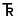

The DescriptionOfMapUnits Table
Parsing a Description of Map Units (DMU) into the fields of the DescriptionOfMapUnits table is a relatively straightforward process. As an example, figure 3–1 shows a heading and two map unit descriptions from a DMU in a relatively recent published geologic map (Evarts and others, 2016); table 3–1 shows the same heading and two map units parsed into the fields of a DescriptionOfMapUnits table.
{kind=link}
Figure 3-1. Part of a modern Description of Map Units, excerpted from a geologic map published relatively recently (Evarts and others, 2016). Click the figure to enlarge. See table 3–1 for parsing of heading and map units into a DescriptionOfMapUnits table.
Table 3-1. Selected fields and values from a DescriptionOfMapUnits table for the Description of Map Units depicted in figure 3–1.
[Heading, map units, unit names, ages, and descriptions from Evarts and others (2016). Note that title (“DESCRIPTION OF MAP UNITS”; ParagraphStyle “DMUHeading1”) is omitted]
| Field name | |||||
|---|---|---|---|---|---|
| MapUnit | Label | Name | Age | Description | ParagraphStyle |
| <null> | <null> | Surficial deposits | <null> | <null> | DMUHeading2 |
| af | af | Artificial fill | Holocene | Unconsolidated soil, sand, and gravel that underlie industrialized floodplain areas of northern Portland, Oreg., and Vancouver, Wash.; mounds of sand and minor gravel from channel dredging that flank Columbia River; and earth and crushed rock for highway and railroad beds, levees, and small dams | DMUUnit1 |
| Qtf | Qtf | Fan deposits from tributarie | Holocene and Pleistocene | Unconsolidated silt, sand, and gravel in small fan-shaped accumulations from steep drainages in Tualatin Mountains. Most fans are younger than 2,000 years, inferred from relation with Columbia River and Willamette River floodplain deposits (Qcwc and Qcwf). Poorly exposed, but likely composed of silt, sand, and gravel diamicts deposited by debris flow and stratified sediment deposited by streamflow | DMUUnit1 |
Note that several fields are missing from table 3–1. The person who translates an existing map into the GeMS schema will have to determine appropriate values of, for example, the FullName, GeoMaterial, Symbol, Pattern, and AreaFillRGB fields. The following list contains a few things to keep in mind when translating a map into GeMS:
- Values in the MapUnit and Label fields commonly, but not always, are identical (see table 11)
- The Label field allows for the use of special characters such as ^, *, and }, which translate into the geologic age symbols , , and
 , respectively, when the FGDCGeoAge font is specified (see table 11)
, respectively, when the FGDCGeoAge font is specified (see table 11) - Unused fields (for example, the MapUnit and Label fields for headings) are filled with null values, not empty strings
- It is not necessary to add an entry for the DMU title
- Formatting such as bolding of unit names and ages and parentheses around the unit ages should not be captured in the DescriptionOfMapUnits table, as it can be predicted from the table structure. Other kinds of formatting (for example, superscripts or paragraph breaks) cannot be easily stored in the Name and Description fields; if such formatting is important to preserve, use HTML-style markup
Note that some older geologic maps and maps published by some agencies may not have DMUs that are formatted as is shown in figure 3–1 (see the examples given in “The HierarchyKey Field” section below). Nevertheless, we have not found a DMU or map-unit explanation that cannot be translated into this schema.
The HierarchyKey Field
Map-unit explanations on geologic maps commonly are ordered and hierarchical: map units are listed in an intentional sequence; they usually are listed under headings and subheadings; and some may be subunits of other map units. The sequence of map units shown in a DMU generally corresponds to the relative ages of map units, from youngest to oldest. This same hierarchy also is commonly expressed in a Correlation of Map Units (CMU) diagram. Hierarchy also may express closeness in genesis, paleogeography, relative certainty of map-unit identification, or other relations. On some maps that organize the DMU by the various physiographic regions or geologic terranes, or where many units were deposited contemporaneously (for example, many surficial geologic maps), the rules for designation of hierarchy may appear somewhat arbitrary, but the hierarchy is evident from the ordering and indentation of the DMU.
In the DMU of a USGS geologic map, hierarchy is shown by the paragraph style (font style, alignment, and indentation) of successive elements. This hierarchy is also shown by the spatial arrangement of map-unit boxes, headings, and brackets in the associated CMU diagram.
We record these relations in the DescriptionOfMapUnits table with the HierarchyKey attribute, which (1) allows the table to be sorted in its proper sequence, and (2) records parent-child relations. Values of HierarchyKey are text strings with the form of nn-nn or nn-nn-nn, etc. Each fragment (nn) of the HierarchyKey value is numeric, is left-padded with zeros so that each fragment has the same length, and is dash delimited. Different values of HierarchyKey may be made up of different numbers of fragments. For example, a DMU row that has a HierarchyKey value = “03-11” is the eleventh child of the parent row that has the HierarchyKey value = “03”.
The following are some general rules for the construction of HierarchyKey values:
- Within siblings (that is, children of the same parent), elements are numbered youngest to oldest
- A parent may have 0, 1, or many children
- The length (n versus nn versus nnn) of a HierarchyKey fragment is determined by the size of the family that has the largest number of siblings. Note that it is acceptable to have extra zeros (for example, using an unnecessarily long fragment value of “003”, when “3” or “03” would work), but this practice generally is discouraged as it reduces the readability of HierarchyKey values
- Headings cannot be children of map units; however, headings may be children of other headings, and map units may be children of either headings or other map units
- Values of HierarchyKey within a single DescriptionOfMapUnits table must be unique
- If an alphanumeric sort on the HierarchyKey field (in ascending order) does not put the DescriptionOfMapUnits table in the correct order (that is, if it does not match the order of the DMU), then one or more HierarchyKey values are incorrect
- After alphanumeric sorting, a HierarchyKey value may be the same length as its preceding value (that is, it is a sibling); or it may be one fragment longer than its preceding element (that is, it is a child) but not more than one fragment longer (generations cannot be omitted); or it may be shorter than its preceding value (that is, it is an aunt, a great-aunt, etc.; in other words, it is not in the immediate family)
- It typically is easier to decipher hierarchy from a DMU than from a CMU. Unfortunately, on some published maps, the hierarchy of headings and map units in the DMU and CMU do not agree, and it is not easy to determine which is correct. When encoding such maps, choose the hierarchy that you think best expresses the author’s intentions and will best serve users of the database.
The figures and tables below are examples that illustrate the use of the HierarchyKey field and its values. Each figure (figs. 3–2 through 3–5) reproduces part of a DMU or CMU for a published map, and each table (tables 3–2 through 3–5) reproduces part of the corresponding DescriptionOfMapUnits table.
{kind=link}
Figure 3-2. Reproduction of part of a map-unit explanation from a somewhat older geologic map (Hoggatt, 1979; image extracted from map accessed from https://ngmdb.usgs.gov/mapview/), showing an older style of map-unit description. Click the figure to enlarge. See table 3–2 for parsing of map units into a DescriptionOfMapUnits table.
Table 3-2. Selected fields and values from a DescriptionOfMapUnits table for the explanation depicted in figure 3–2.
[Map units and unit names from Hoggatt (1979). Note that title (“EXPLANATION”) is omitted]
| Field name | |||||
|---|---|---|---|---|---|
| HierarchyKey | ParagraphStyle | MapUnit | Name | ||
| 01 | DMUUnit1 | Qal | Alluvium | ||
| 02 | DMUUnit1 | Qm | Mesa Conglomerate | ||
| 03 | DMUUnit1 | Qp | Palm Spring Formation | ||
| 04 | DMUUnit1 | Qc | Canebrake Formation | ||
| 05 | DMUUnit1 | Tal | Alverson Andesite | ||
| 06 | DMUUnit1 | Tan | Anza Formation | ||
| 07 | DMUUnit1 | Kt1 | Tonalite | ||
| 08 | DMUUnit1 | Km | Gneissic and Metasedimentary rocks | ||
| 09 | DMUUnit1 | Kc | Cuyamaca Gabbro | ||
| 10 | DMUUnit1 | Trm | Marble | ||
Note the following in the above examples (fig. 3–2; table 3–2):
- There is no separate DMU in this report; map-unit descriptions are contained in the Explanation
- The Explanation (fig. 3–2) has no headings or subunits
- The sequence of map units (top to bottom, left to right) is in the order of increasing geologic age (the Palm Spring Formation and the Canebrake Formation have the same age), and every map unit has the same rank. Thus, the HierarchyKey field contains sequential values of 1 to 10, left-padded with zeroes so that an alphanumeric sort on HierarchyKey puts the rows of the DescriptionOfMapUnits table in the correct sequence
- The last entry (Name = “Marble”, HierarchyKey = “10”) has a MapUnit value = “Trm”, which is an ASCIIcharacter substitution for the map-unit label . To produce the geologic age symbol ( = Triassic) on the map, the Label (field not shown) value would be “^”, and the FGDCGeoAge font would need to be specified (see table 11); thus, for MapUnit = “Trm”, Label = “^m”.
Note that, in a database, values in the Name field consist of unformatted ASCII characters.16 However, for purposes of illustration only, the contents of the Name field in the tables that follow (tables 3–3 through 3–5) have been formatted (by alignment, font style, and capitalization) so it will be easier to match them to their corresponding entries in the DMU or CMU on the source map. In an actual database, such formatting would only be recorded in the ParagraphStyle field.

Figure 3-3. Part of a modern Correlation of Map Units diagram, excerpted from a geologic map published relatively recently (Evarts and others, 2016). Click the figure to enlarge. See table 3–3 for parsing of headings and map units into a DescriptionOfMapUnits table.
Table 3-3. Selected fields and values from a DescriptionOfMapUnits table for the Correlation of Map Units diagram depicted in figure 3–3.
[Headings and map units from Evarts and others (2016); unit names from Description of Map Units (not shown). Note that formatting (font style, capitalization, alignment, and indentation) of Name values is shown for example purposes only, to help match them to headings and units shown in figure 3–3]
| Field name | |||||
|---|---|---|---|---|---|
| HierarchyKey | ParagraphStyle | MapUnit | Name | ||
| 2 | DMUHeading2 | <null> | BASIN-FILL DEPOSITS | ||
| 2-1 | DMUUnit1 | QTc | Unnamed conglomerate | ||
| 2-2 | DMUUnit1 | Ttfc | Troutdale Formation, conglomerate member | ||
| 2-3 | DMUUnit1 | Tsr | Sandy River Mudstone | ||
| 3 | DMUHeading2 | <null> | BEDROCK | ||
| 3-1 | DMUHeading3 | <null> | COLUMBIA RIVER BASALT GROUP | ||
| 3-1-1 | DMUUnit1 | <null> | Grande Ronde Basalt | ||
| 3-1-1-1 | DMUUnit2 | Tgsb | Sentinel Bluffs Member | ||
| 3-1-1-2 | DMUUnit2 | Tgww | Winter Water Member | ||
| 3-1-1-3 | DMUUnit2 | Tgo | Ortley member | ||
| 3-1-1-4 | DMUUnit2 | Tggc | Grouse Creek member | ||
| 3-2 | DMUHeading3 | <null> | PALEOGENE SEDIMENTARY ROCKS | ||
| 3-2-1 | DMUUnit1 | Tsf | Scappoose Formation | ||
Note the following in the above examples (fig. 3–3; table 3–3):
- The CMU title (not shown in figure 3–3) was not considered when other HierarchyKey values in the DescriptionOfMapUnits table (table 3–3) were assigned
- Also not shown in figure 3–3 are younger surficial deposits (listed under the heading “SURFICIAL DEPOSITS”); however, these units and their heading were considered when assigning HierarchyKey values for the subsequent headings and units (HierarchyKey = “2”, “2-1”, etc.)
- The “unconformity” notations in the CMU were not entered into the DescriptionOfMapUnits table
- Unused fields (for example, the MapUnit field for headings) are filled with null values, not empty strings
- The authors of this map chose to treat the Columbia River Basalt Group, which is a formal lithostratigraphic unit, as a heading, not a map unit. The Grande Ronde Basalt, which also is a formal lithostratigraphic unit, also is not mapped separately; however, the authors chose to treat it as a map unit. The ParagraphStyle attribute is needed to distinguish these choices (headings versus map units)

Figure 3-4. Part of an older map-unit explanation, excerpted from an older geologic map (Scott, 1961), showing an older, abbreviated style of mapunit description. Click the figure to enlarge. See table 3–4 for parsing of headings and map units into DescriptionOfMapUnits table.
Table 3-4. Selected fields and values from a DescriptionOfMapUnits table for the explanation depicted in figure 3–4.
[Headings, map units, and unit names from Scott (1961). Note that formatting (capitalization, alignment, and perceived indentation) of Name values is shown for example purposes only, to help match them to headings and units shown in figure 3–4. Note also that title (“EXPLANATION”) is omitted]
| Field name | |||||
|---|---|---|---|---|---|
| HierarchyKey | ParagraphStyle | MapUnit | Name | ||
| 1 | DMUUnit1 | Qal | Alluvium | ||
| 2 | DMUHeading2 | <null> | MIDWAY GROUP | ||
| 2-1 | DMUUnit1 | Tc | Clayton Formation | ||
| 3 | DMUHeading2 | <null> | SELMA GROUP | ||
| 3-1 | DMUUnit1 | <null> | Providence Sand | ||
| 3-1-1 | DMUUnit2 | Kpu | Upper member | ||
| 3-1-2 | DMUUnit2 | Kpp | Perote Member | ||
| 3-2 | DMUUnit1 | <null> | Ripley Formation and Demopolis Chalk | ||
| 3-2-1 | DMUUnit2 | Kd | Demopolis Chalk | ||
| 3-2-2 | DMUUnit2 | <null> | Ripley Formation | ||
| 3-2-2-1 | DMUUnit3 | Kru | Upper member | ||
| 3-2-2-2 | DMUUnit3 | Krc | Cusseta Sand Member | ||
| 3-3 | DMUUnit1 | <null> | Mooreville Chalk and Blufftown Formation | ||
| 3-3-1 | DMUUnit2 | Km | Mooreville Chalk | ||
| 3-3-2 | DMUUnit2 | Kb | Blufftown Formation | ||
| 4 | DMUUnit1 | Ke | Eutaw formation | ||
Note the following in the above examples (fig. 3–4; table 3–4):
- There is no separate DMU in this report; map-unit descriptions are contained in the Explanation
- Unused fields (for example, the MapUnit field for headings) are filled with null values, not empty strings
- It is unclear whether Midway Group and Selma Group are headings or map units, but the hierarchy expressed in the Explanation is obvious, and the corresponding HierarchyKey values (“2”, “3”) are easily assigned. In this case, the ParagraphStyle values (“DMUHeading2”) were chosen somewhat arbitrarily
- The Explanation boxes (as read from left to right, top to bottom) show the Demopolis Chalk preceding the Ripley Formation, but the order of the associated text suggests the reverse. In this case, the HierarchyKey values (“3-2-1”, “3-2-2”) chosen reflect the box order.

Figure 3-5. Part of a relatively modern Correlation of Map Units diagram, excerpted from a geologic map published somewhat recently (Tabor and others, 2002). Click the figure to enlarge. See table 3–5 for parsing of headings and map units into DescriptionOfMapUnits table.
Table 3-5. Selected fields and values from a DescriptionOfMapUnits table for the Correlation of Map Units diagram depicted in figure 3–5.
[Headings and map units from Tabor and others (2002); unit names from Description of Map Units (not shown). Note that formatting (font style, capitalization, alignment, and indentation) of Name values is shown for example purposes only, to help match them to headings and units shown in figure 3–5]
| Field name | |||||
|---|---|---|---|---|---|
| HierarchyKey | ParagraphStyle | MapUnit | Name | ||
| 4 | DMUHeading3 | <null> | ROCKS AND DEPOSITS OF THE CASCADE MAGMATIC ARC | ||
| 4-1 | DMUUnit1 | <null> | Rocks of Glacier Peak volcano and associated volcanic rocks and deposits | ||
| 4-1-1 | DMUUnit2 | Qglh | Laharic deposits | ||
| 4-1-2 | DMUUnit2 | Qgp | Pumice deposits | ||
| 4-1-3 | DMUUnit2 | Qgwf | Deposits of the White Chuck fill | ||
| 4-1-3-1 | DMUUnit3 | Qgwt | Dacitic vitric tuff | ||
| 4-1-4 | DMUUnit2 | Qgsf | Deposits of the Suiattle fill | ||
| 4-1-5 | DMUUnit2 | Qgd | Dacite | ||
| 4-1-6 | DMUUnit2 | Qgdp | Dacite of Disappointment Peak | ||
| 4-1-7 | DMUUnit2 | Qcc | Cinder cones | ||
| 4-1-8 | DMUUnit2 | Qaf | Andesite flow | ||
| 4-1-9 | DMUUnit2 | <null> | Volcanic rocks of Gamma Ridge | ||
| 4-1-9-1 | DMUUnit3 | Tgrv | Volcanic rocks | ||
| 4-1-9-2 | DMUUnit3 | Tgrc | Conglomerate | ||
| 4-1-9-3 | DMUUnit3 | Tgrf | Altered andesite and dacite flows | ||
| 4-2 | DMUHeading4 | <null> | Intrusive rocks of the Cascade Pass family | ||
| 4-2-1 | DMUUnit1 | <null> | Cool Glacier stock | ||
| 4-2-1-1 | DMUUnit2 | Tcgg | Granodiorite | ||
| 4-2-1-2 | DMUUnit2 | Tcgb | Breccia | ||
| 4-2-2 | DMUUnit1 | Tdp | Dacite plugs and dikes | ||
| 4-2-3 | DMUUnit1 | <null> | Mount Buckindy pluton | ||
| 4-2-3-1 | DMUUnit2 | Tmbt | Tonalite and granodiorite | ||
| 4-2-3-2 | DMUUnit2 | Tmbb | Breccia | ||
| 4-2-4 | DMUUnit1 | <null> | Cascade Pass dike | ||
| 4-2-4-1 | DMUUnit2 | Tdt | Tonalite | ||
| 4-2-4-2 | DMUUnit2 | Tdbx | Breccia | ||
| 4-2-5 | DMUUnit1 | <null> | Cloudy Pass batholith and associated rocks | ||
| 4-2-5-1 | DMUUnit2 | Tcpl | Light-colored granite and granodiorite | ||
| 4-2-5-2 | DMUUnit2 | Tcpd | Dark-colored granodiorite, tonalite, gabbro, and quartz gabbro | ||
| 4-2-5-3 | DMUUnit2 | Tcpu | Granodiorite, tonalite, and gabbro, undivided | ||
| 4-2-5-4 | DMUUnit2 | Tcpb | Intrusive breccia | ||
| 4-2-5-5 | DMUUnit2 | Tcpc | Clustered light-colored dikes and irregular intrusive bodies | ||
| 4-2-6 | DMUUnit1 | Tdm | Downey Mountain stock | ||
| 4-3 | DMUHeading4 | <null> | Intrusive rocks of the Snoqualmie family | ||
| 4-3-1 | DMUUnit1 | <null> | Grotto batholith | ||
| 4-3-1-1 | DMUUnit2 | Tgm | Monte Cristo stock | ||
| 4-3-1-2 | DMUUnit2 | Tgd | Dead Duck pluton | ||
| 4-4 | DMUHeading4 | <null> | Intrusive rocks of the Index family | ||
| 4-4-1 | DMUUnit1 | <null> | Squire Creek stock and related intrusive rocks | ||
| 4-4-1-1 | DMUUnit2 | Tst | Tonalite | ||
| 4-4-1-2 | DMUUnit2 | Tsbt | Biotite tonalite | ||
| 4-4-1-3 | DMUUnit2 | Tsh | Hornblende quartz diorite | ||
| 4-4-1-4 | DMUUnit2 | Tsst | Tonalite of the Shake Creek stock | ||
| 4-4-2 | DMUUnit1 | Tsrd | Sauk ring dike | ||
Note the following in the above examples (fig. 3–5; table 3–5):
- The CMU title (not shown in figure 3–5) was not considered when other HierarchyKey values in the DescriptionOfMapUnits table (table 3–5) were assigned
- Also not shown in figure 3–5 are younger glacial and nonglacial deposits; however, these headings and units were considered when assigning HierarchyKey values for the subsequent headings and units
- The asterisks in some of the CMU boxes refer to the CMU bracketed headnote (not shown)
References Cited in Appendix 3
Evarts, R.C., O’Connor, J.E., and Cannon, C.M., 2016, Geologic map of the Sauvie Island quadrangle, Multnomah and Columbia Counties, Oregon, and Clark County, Washington: U.S. Geological Survey Scientific Investigations Map 3349, scale 1:24,000, pamphlet 34 p., https://doi.org/10.3133/sim3349.
Hoggatt, W.C., 1979, Geologic map of Sweeney Pass quadrangle, San Diego County, California: U.S. Geological Survey Open-File Report 79–754, scale 1:24,000, 36 p.
Scott, J.C., 1961, Geologic map of Bullock County, Alabama: Geological Survey of Alabama Special Map 19.
Tabor, R.W., Booth, D.B., Vance, J.A., and Ford, A.B., 2002, Geologic map of the Sauk River 30- by 60-minute quadrangle, Washington: U.S. Geological Survey Geologic Investigations Series Map I–2592, scale 1:100,000, 67 p., https://pubs.usgs.gov/imap/i2592/.
Citation
U.S. Geological Survey National Cooperative Geologic Mapping Program, 2020, GeMS (Geologic Map Schema)—A standard format for the digital publication of geologic maps: U.S. Geological Survey Techniques and Methods, book 11, chap. B10, 74 p., https://doi.org/10.3133/tm11B10.